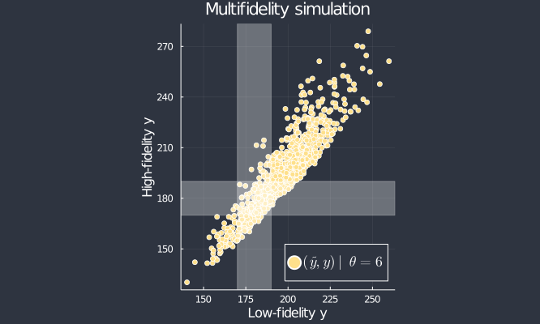
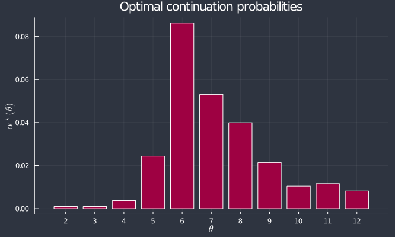

CMStatistics 2020
KCL / Zoom: 19 December 2020
Prescott and Baker. Multifidelity approximate Bayesian computation. SIAM/ASA Journal of Uncertainty Quantification 8:114 (2020)
Prescott and Baker. Multifidelity approximate Bayesian computation with sequential Monte Carlo parameter sampling. arXiv:2001.06256 (2020)
Map prior, $\pi(\theta)$, to posterior, $\pi(\theta~|~x_{\mathrm{obs}})$ using Bayes's rule:
$\pi(\theta~|~ x_{\mathrm{obs}}) \propto L(\theta) \pi(\theta).$
Here, $L(\theta) = f(x_{\mathrm{obs}}~|~\theta)$ is the likelihood of observed data, $x_{\mathrm{obs}}$, for a given parameter value, $\theta$, under a given model, $f$.
The likelihood, $L(\theta)$, often cannot be calculated.
$\pi(\theta~|~ x_{\mathrm{obs}}) \propto L(\theta) \pi(\theta)$.
Approximate $L(\theta) \approx \hat L(\theta)$ with a function that can be calculated, or estimated, based on model simulations:
Stochastic time, $y$ seconds, for $\theta$ enzyme molecules to convert 100 substrate molecules into product.
Observed data, $x_{\mathrm{obs}}=180$ with threshold $\epsilon=10$.
The computational burden of likelihood-free inference is dominated by simulation.
Many fields aim to speed simulation with cheaper, approximate, low-fidelity models.
Examples include space/time discretisation, model order reduction, timescale separation, early termination, ODE and mean field approximations.
Inference using a low-fidelity model, again with observed data, $x_{\mathrm{obs}}=180$ with threshold $\epsilon=10$.
Can we use low-fidelity simulations to calibrate the high-fidelity model?
... not on their own.
ABC likelihood 'works' by Monte Carlo estimation.
Given $\theta$, simulate $y \sim f(\cdot~|~\theta)$ and calculate a weight, \[ w(\theta, y) = \mathbf 1(y \in \Omega). \]
The key is the conditional expectation: \[ \mathbf E(w~|~\theta) = \mathbf P(y \in \Omega~|~\theta) = \hat L_{\mathrm{ABC}}(\theta). \]
Low-fidelity inference 'fails' because we apply a different weight, \[ \tilde w(\theta, \tilde y) = \mathbf 1(\tilde y \in \Omega), \]
with the 'wrong' conditional expectation, \[ \mathbf E(\tilde w~|~\theta) = \mathbf P(\tilde y \in \Omega~|~\theta) \neq \hat L_{\mathrm{ABC}}(\theta). \]
Each weight, $w$ and $\tilde w$, incurs simulation costs, $T(\theta, y)$ and $\tilde T(\theta, \tilde y)$, respectively.
Key assumption is that low-fidelity simulation is significantly cheaper than high-fidelity: \[ \mathbf E(\tilde T~|~ \theta) \ll \mathbf E(T~|~\theta). \]
Task: design a cheap, unbiased weight:
$w_{\mathrm{mf}}(\theta, $
$\tilde y,$
$y,$
$u$
$)~= $
$\mathbf 1(\tilde y \in \Omega)$
$+ \left[ \mathbf 1(y \in \Omega) - \mathbf 1(\tilde y \in \Omega) \right]$
$\mathbf 1(u < \alpha)$
$\frac{1}{\alpha}$
Conditional expectation: $\mathbf P(\tilde y \in \Omega~|~\theta)$ $\mathbf P(y \in \Omega~|~\theta)$ $\alpha \mathbf P(y \in \Omega~|~\theta) + (1-\alpha) \mathbf P(\tilde y \in \Omega~|~\theta)$ $\mathbf P(y \in \Omega~|~\theta)$
Simulation cost: $\mathbf E(\tilde T~|~\theta)$ $\mathbf E(\tilde T~|~\theta) + \mathbf E(T~|~\theta)$ $\mathbf E(\tilde T~|~\theta) + \alpha \mathbf E(T~|~\theta)$ $\mathbf E(\tilde T~|~\theta) + \alpha \mathbf E(T~|~\theta)$
$w_{\mathrm{mf}}(\theta, \tilde y, y, u) = $
$\mathbf 1(\tilde y \in \Omega) + \left[ \mathbf 1(y \in \Omega) - \mathbf 1(\tilde y \in \Omega) \right] \mathbf 1(u < \alpha) \frac{1}{\alpha} $
With $\alpha < 1$, any disagreement between the models increases the variance of $w_{\mathrm{mf}}$:
\[ \begin{align} \mathrm{Var} (w_{\mathrm{mf}}~|~\theta) &= \mathrm{Var} (w~|~\theta) \\ &+ \left(\frac{1}{\alpha} - 1\right) \mathbf P(\mathrm{disagree}~|~\theta) . \end{align} \]
\[ \begin{align} \mathrm{Var} (w_{\mathrm{mf}}~|~\theta) &= \mathrm{Var} (w~|~\theta) \\ &+ \left(\frac{1}{\alpha} - 1\right) \mathbf P(\mathrm{disagree}~|~\theta) . \end{align} \]
Decrease $\alpha$ to trade off decreased simulation time, \[ \mathbf E(T_{\mathrm{mf}}~|~\theta) = \mathbf E(\tilde T~|~\theta) + \alpha \mathbf E(T~|~\theta), \] against increased variance,
\[ \begin{align} \mathrm{Var} (w_{\mathrm{mf}}~|~\theta) &= \mathrm{Var} (w~|~\theta) \\ &+ \left(\frac{1}{\alpha} - 1\right) \mathbf P(\mathrm{disagree}~|~\theta) . \end{align} \]
Reciprocal relationship between MC estimator variance and total simulation cost:
$\mathrm{Var} \left( \frac{\sum w_{\mathrm{mf},i} F(\theta_i)}{\sum w_{\mathrm{mf},i}} \right)\mathbf E(T_{\mathrm{tot}}) = \phi(\alpha(\theta))$
$\alpha^\star (\theta) = \frac{1}{\lambda} |F(\theta) - \mathbf E(F)| \left( \frac{\mathbf E(\tilde T)}{\mathbf E(T~|~\theta)} \mathbf P(\mathrm{disagree}~|~\theta)\right)^{1/2} $
$\alpha^\star (\theta) = \frac{1}{\lambda} |F(\theta) - \mathbf E(F)| \left( \frac{\mathbf E(\tilde T)}{\mathbf E(T~|~\theta)} \mathbf P(\mathrm{disagree}~|~\theta)\right)^{1/2} $
Calculated to minimise the estimator variance of $\pi_{\mathrm{ABC}}(6~|~x_{\mathrm{obs}})$.
We have somewhat reduced the variance of the MC estimate of $\pi_{\mathrm{ABC}}(6~|~x_{\mathrm{obs}})$.
But there is scope for much more improvement!
Prescott and Baker. Multifidelity approximate Bayesian computation. SIAM/ASA Journal of Uncertainty Quantification 8:114 (2020)
Prescott and Baker. Multifidelity approximate Bayesian computation with sequential Monte Carlo parameter sampling. arXiv:2001.06256 (2020)
I'm happy to take questions.
tppres.co.ttWith thanks to Ruth Baker and UKRI Biotechnology and Biological Sciences Research Council project BB/R000816/1.